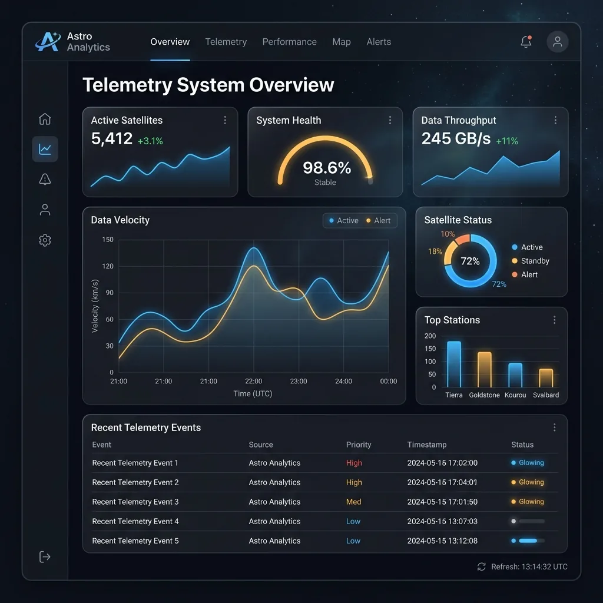
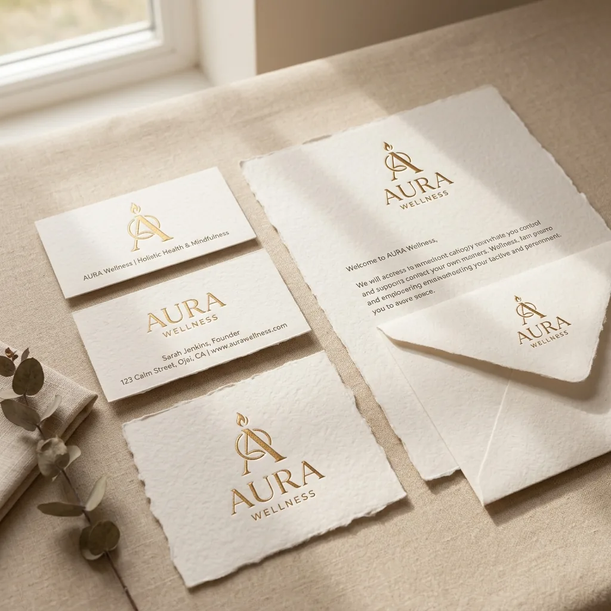
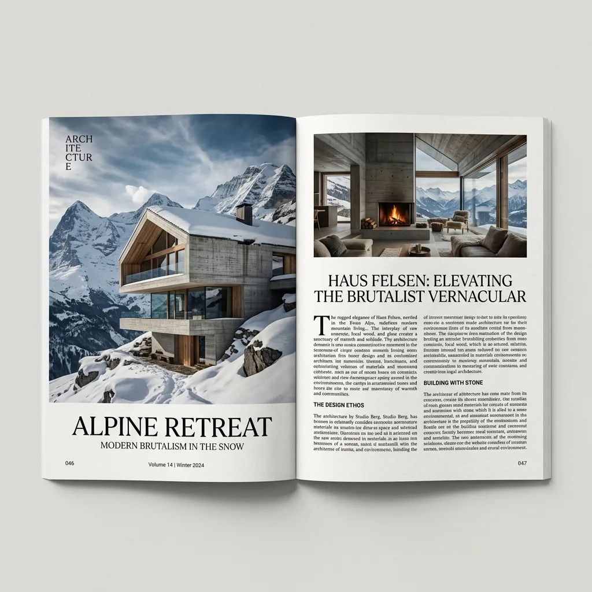

Elizaveta
Vakalova
Product · Brand · Campaign
I craft experiences and visual systems that move people to act.
Astro Analytics
Dashboard UX/UI
Analytics platform that turns complex data into clear decisions for growing teams.


AURA Identity
Brand Identity
Minimal, timeless identity for a wellness brand rooted in clarity and calm.
Alpine Retreat Editorial
Editorial Design
Architecture editorial exploring space, light, and the quiet power of place.

Mist & Chrome
3D Motion & Visual Art
Organic forest atmosphere meets fluid liquid-chrome typography in an immersive 3D motion exploration.
I work across product, brand, editorial, and campaigns—bringing strategy, craft, and a user-centered mindset to every detail.
About my process arrow_forward